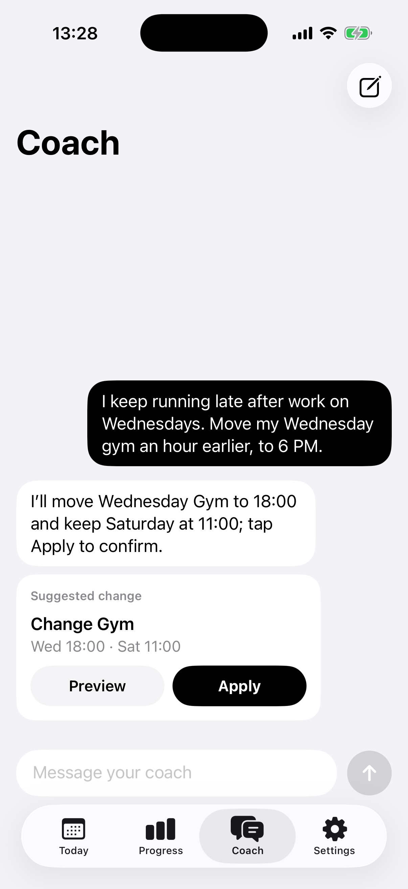
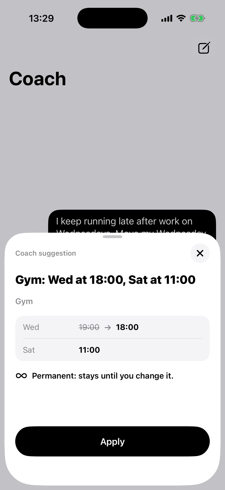

He cancelled on himself.
Again.
His gym bag was packed,
but one meeting ran late.
So he tried Habitnex
and asked the coach for a different time.
He could check the suggestion
before changing his plan.
Join the waitlist
habitnex.io
Illustrative story · App demo